Darpa Games

Web creada con el propósito de exponer información sobre el desarrollo del videojuego Shiawase Story.
Bienvenidos a la Memoria de Shiwasae Story
Introducción
En este documento se detallarán las fases por las que nuestro equipo (DARPA Gamers) ha pasado para realizar “Shiawase Story”.
Está desarrollado puramente en Java con la librería de videojuegos “Slick2D”.
Concepto del juego
Se trata de un videojuego RPG orientado a un público mayor de 12 años.
Pretende ser inmersivo con la historia y llevar al jugador poco a poco hacia el entendimiento total de la situación de la protagonista a medida que pasa satisfactoriamente los niveles. El objetivo final es sacar a la protagonista de la casa peligrosa.
Como características principales podemos destacar:
- Ambientación detallada.
- Música de fondo durante todo el juego.
- Mapas grandes con numerosas escenas.
- Distintos monstruos con distintas características.
- Numerosos tipos de pociones.
- Menú muy completo.
- Simple en cuanto a controles.
Historia del juego
Shiawase Story relata la aventura de la protagonista (Lire), que tendrá que adentrarse en la casa, pasando por cada nivel y derrotando a cada monstruo para poder escapar y descubrir el inicio de todo.
El juego está estructurado en tres niveles, con diferentes escenas dentro de cada nivel.
En el primer nivel, el juego comienza con la protagonista despertando en una casa gigante desconocida, está triste, asustada y confundida. El cuarto en el que está no le es familiar...
De repente, escucha de fondo unos ruidos espantosos que provienen de un cuarto, lentamente se va acercando a él y ve a un monstruo.
Se armó de valor, entró al cuarto, y con su varita derrotó al monstruo.
En el segundo nivel las cosas se complican un poco para la protagonista, ya ha tenido la primera toma de contacto con la casa, los objetos y los monstruos; no será tan fácil como antes.
Tras derrotar al monstruo, la protagonista creyó que estaría libre, total ¿qué más podría pasar? Para nada imaginaría que al otro lado de la puerta habría mucho más que recorrer hasta escapar de esa casa. La desesperación rápidamente invadió los pensamientos de la protagonista, sin embargo, ya no estaba tan triste, ahora sabe qué tiene que hacer: sobrevivir.
Finalmente, en el tercer nivel, tras vencer a todos los monstruos del nivel anterior la protagonista está muy confiada, sin embargo, tras la decepción de no encontrar la salida, poco a poco deja de tener miedo y se va acostumbrando a la casa y a los secretos que esconde.
Este mapa aparentemente se verá fácil, pero será el más complicado del juego. La protagonista al creer que todos los monstruos se derrotan de la misma forma, se acostumbrará a usar las mismas mecánicas, sin embargo, esto no será tan fácil en este mapa…
Cuando la protagonista jugaba con su hermano a “Monstruos y Brujas”, siempre perdía al final contra “El monstruo de los cristales”, este recuerdo le hará entrar en pánico cuando se dé cuenta de que se ha metido en su cueva.
Tras pasar satisfactoriamente el tercer nivel, Lire se despertará y se dará cuenta de que todo ha sido un sueño. Le dijo a su hermano que al fin había vencido a su monstruo más fuerte, aunque él nunca lo creería.
Historia del personaje principal
El juego comienza con una joven despertando de su pesadilla. No entiende el por qué de su localización en una mansión tan gigante y totalmente desconocida para ella. En ese momento se siente triste, asustada y confundida. La habitación que la rodea no le es para nada familiar. Sin embargo, mientras va investigando poco a poco el lugar, se da cuenta de que los objetos que hay desperdigados por los diferentes rincones de la extraña casa le suenan, hasta caer en una afirmación que la confunde más aún: ¡son sus juguetes!
Sin darle tiempo a entender lo que está ocurriendo, escucha de fondo unos espantosos ruidos que erizan su piel desde los pies a la cabeza. Provienen de una habitación, a la cual lentamente decide acercarse mientras que su corazón le grita que huya de allí lo más rápido que pueda. A través de una puerta medio abierta, ve a un ser monstruoso. En ese momento, el miedo toma el control de su cuerpo, pero antes de dejarse llevar por el pánico, se da cuenta de que durante esos breves instantes que le parecieron eternos, ha podido visualizar algo que le parece extrañamente familiar. Inmediatamente, le recuerda a una figurita de juguete de su hermano, ¡pero ésta está viva!
De repente, a su mente le vienen los recuerdos de hace unos días, en los que estuvo jugando con su hermano a “Monstruos y Brujas”. Ella siempre conseguía la victoria destruyendo al monstruo de su hermano con un juguete en específico…
Dos segundos pasaron hasta que asoció que dicho juguete era el objeto que encontró en el cuarto en el cual despertó, una especie de varita mágica. Sin dudarlo, decide apaciguar su miedo, entra a la habitación, y con la varita derrota al monstruo sin piedad.
Mecánicas del juego
Los controles los podemos resumir en esta imagen creada e implementada dentro del juego para que el jugador pueda consultarla siempre que quier desde el menú de pausa, o desde el menú principal.

Después de testear el juego con personas externas al desarrollo nos dimos cuenta que la utilidad de las pociones, era poco evidente y poco perceptible, por lo que hemos creado un botón que te arroje toda la información sobre las pociones. Tipo, duración, explicación, imagen de la poción entre otras cosas.
El cuadro informativo se puede acceder a él mediante el tabulador, y no detiene el flujo de funcionamiento del nivel.
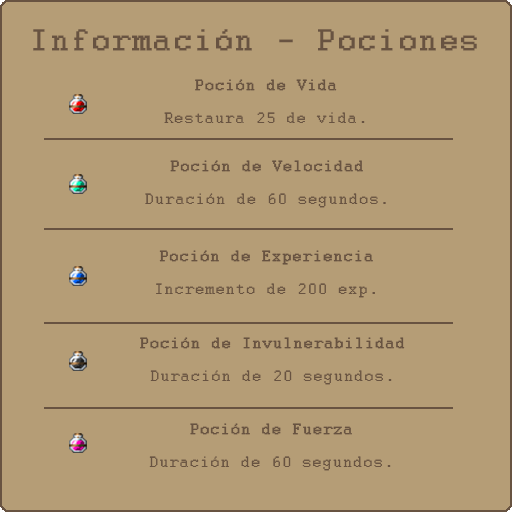
Estas pociones, podrán ser obtenidas de los distintos cofres que haya en el nivel. La localización de los cofres es constante en las distintas escenas de cada nivel, pero el contenido de los mismos no.

Hemos aplicado un factor RNG en la creación de los cofres, dando una serie de probabilidades a cada tipo de poción. Con esto conseguimos que la experiencia de pasarse el juego una vez sea completamente distinta a pasárselo otra con otros tipos de pociones. Este aleatorización de los cofres con probabilidades se ha llevado a cabo con el siguiente código.
/**
*
* Según la definicion de Laplace de probabilidad
*
* Suponemos que todos los posibles numeros aleatorios generados por el obj random
* son equiprobables, entonces con nuestra condicion del if estamos consiguiendo una prob tal
* que sería el numero de casos favorables entre todos los posibles resultados del experimento.
*
* En el primer caso tendríamos 1/12 de probabilidad(8.33%). Escogemos un posible valor
* en nuestros caso el 0(nos genera numeros de 0 - 11) entre todos los posibles valores generados.
*
* La probabilidad de cumplir esa condicion es de un 8.33%
*
* Id_pociones: 0 == hp
* 1 == velo
* 2 == exp
* 3 == Invulnerabilidad
* 4 == Fuerza
*/
public void cargar_id_pociones_probabilidad(){
//Invulnerabilidad
if(0 == new Random().nextInt(12)){
this.lista_id_pociones.add(3);
//Fuerza
} else if(0 == new Random().nextInt(6)){
this.lista_id_pociones.add(4);
//Velo
}else if(0 == new Random().nextInt(3)){
this.lista_id_pociones.add(1);
//Hp
}else if(0 == new Random().nextInt(2)){
this.lista_id_pociones.add(0);
}
//Exp siempre vamos a dar por abrir un cofre, lo que será aleatorio será el numero de esxp que vamos a dar
// Vamos a dar de 1 - 3 botellas de exp
int exp = (new Random().nextInt(3) +1);
for(int i = 0; i <exp; i++){
this.lista_id_pociones.add(2);
}
}
Los cofres pueden ser recogidos por el jugador una única vez, lo hará pulsando la tecla R (Recoger) siempre que esté en un área próxima al cofre.
Esto sea ha implementado con dos polígonos, uno para manejar las colisiones con el cofre y otro para detectar si está en un área próxima al cofre.
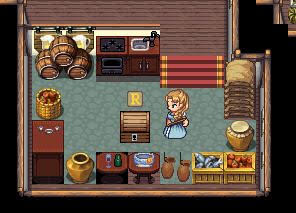
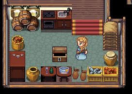
Todas las pociones recogidas por el jugador se irán añadiendo al inventario. El inventario está conformado de 5 slots con capacidad de 9 pociones por slot.
Si el usuario recoge una poción, y el slots de ese tipo está lleno se descartará. Las pociones se pueden consumir pulsando la tecla numérica asociada al slots del inventario.
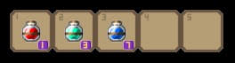
Personaje principal
El personaje principal, Lire, irá evolucionando con cada nivel que supera. Su aspecto visual cambiará a la par que los proyectiles que dispara. De esta forma, hemos querido hacer que el jugador se implique más con el personaje y con su avance en el juego. Habrá tres posibles evoluciones donde el aspecto visual cambiará, su vida y sus ataques. A continuación dejamos tres imágenes que representan como va a ir evolucionando Lire.
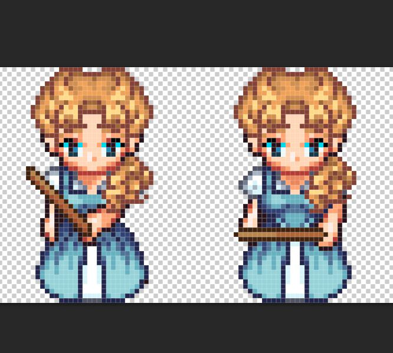
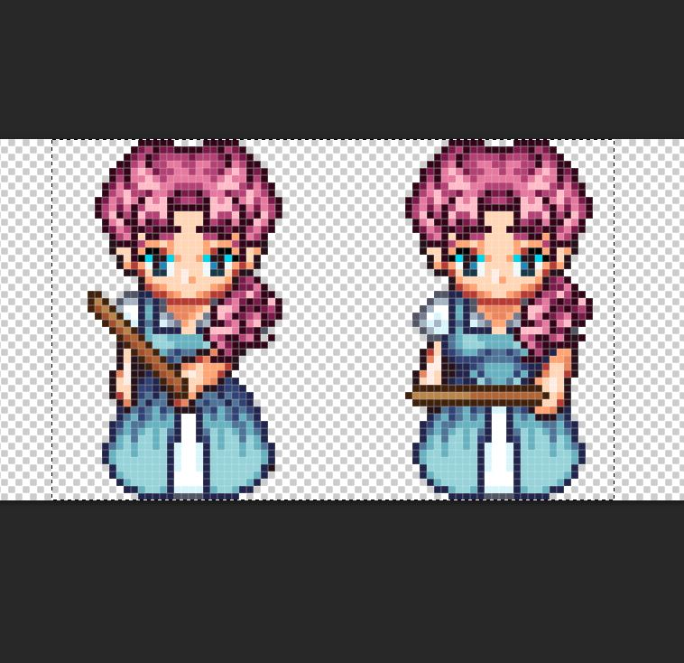
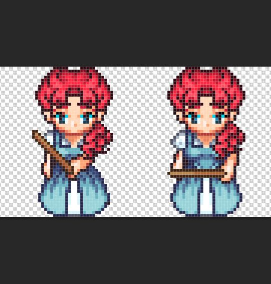
Enemigos
Los enemigos del juego serán esqueletos encapuchados que tratarán de derrotar a Lire por todos los medios. Su ataque es a melé y lo hemos gestionado controlando las colisiones jugador-enemigo con 4 polígonos por ente. De esta forma conseguimos averiguar por que dirección se produce la colisión. Los enemigos tendrán de forma adicional un polígono de tipo circular que actuará como área de visión para detectar el jugador. Cuando se produzca una intersección con el área de visión el monstruo pasará de estado pasivo a perseguir a nuestra protagonista. En el momento que la protagonista derrote al enemigo, este dará experiencia a Lire en función del daño que tenga y munición extra con la que podrá acabar con más enemigos.
/**
* Método que elimina los enemigos en caso de ser eliminado o que le quita vida
*
* @param mon obtener los enemigos que hay en la escena actual
*/
public void destruirEnemigo(ArrayList<Monstruo> mon){
for(int i = 0;i<mon.size();i++){
for(int j = 0;j<this.getVarita().getFlecha().getColisiones().size();j++){
if(this.getVarita().getFlecha().getColisiones().get(j).intersects(mon.get(i).getColision())){
this.getVarita().getFlecha().getColisiones().remove(j);
this.getVarita().getFlecha().getFlechas().remove(j);
mon.get(i).setHp(mon.get(i).getHp()- super.getDanyo());
mon.get(i).setComportamiento("Perseguir");
danyo.play(1.0f,0.5f);
}
if(mon.get(i).getHp()<=0){
//Pintar restos
this.getHud().addRestosEnemigo(mon.get(i).getPunto());
//Añadir municion aleatoria y notificar
Random random = new Random();
this.varita.addMunicion((random.nextInt(10)+1));
this.notif.aniadirNotificacion(this.notif.getImgNotf()[5]);
this.anadirExperiencia((int)Math.sqrt((double)mon.get(i).getDanyo()) + 15*this.nivelJugador);
mata.play(1.0f,0.5f);
mon.remove(i);
break;
}
}
}
}
A continuación, dejamos una imagen del frontal del enemigo.
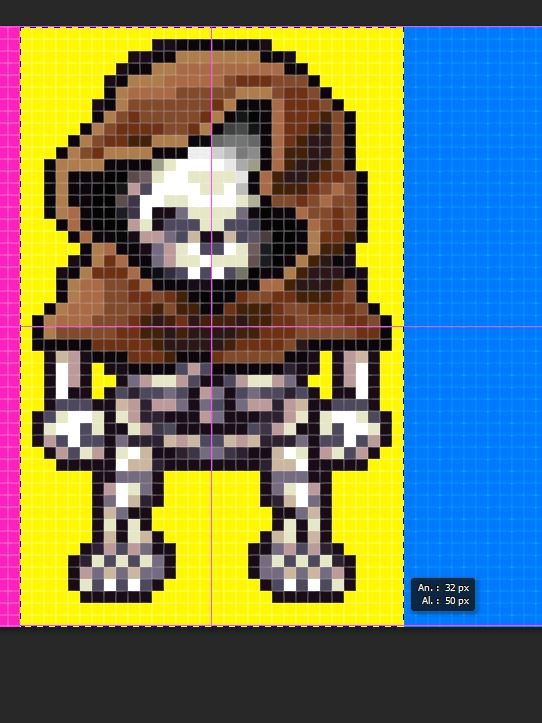
Cuando un jugador ataca a un enemigo este pasará de modo pasivo e irá en su dirección independientemente de su posición. Además para añadir dificultad al nivel, hemos puesto la condición en todas las escenas, de que la protagonista no podrá abandonar la escena ni avanzar a la siguiente escena sin derrotar a todos los enemigos de la misma. De esta forma obligamos que el jugador explore el mapa, encuentre cofres escondidos y con suerte, encuentre alguna sala secreta!
Cámara
Nuestro equipo considera que la cámara de tipo Top-down es la más óptima para los juegos del género RPG. Además, los mapas están creados con tiles, por lo que el movimiento y la exploración por las habitaciones resultará mas eficiente y de mayor facilidad. De forma adicional, el hecho de elegir este tipo de cámara nos va a aportar la no implementación de los saltos, por lo que la complejidad de la programación será menor, así como la demanda de CPU.
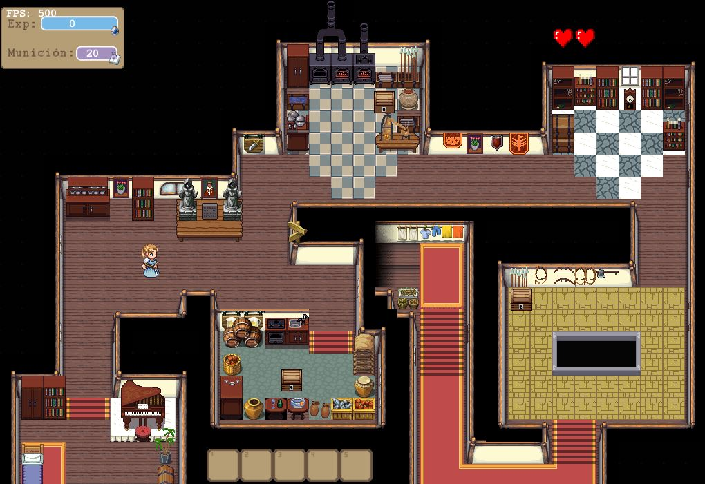
HUD
Desde nuestro grupo de desarrollo, consideramos que la información que arrojamos al jugador es vital para que haya una buena experiencia de juego. Por esto, hemos estructurado nuestro HUD en los siguientes puntos.
- La vida que aparece en forma de corazones en la zona superior derecha. Cada corazón representa 100 unidades de vida.
- Efectos de las pociones de fuerza, invulnerabilidad y velocidad en la zona derecha de la pantalla. Solo mostramos el indicador mientras el jugador tenga la mejora de la poción.
- Inventario con capacidad para los cinco slots de pociones (vida, experiencia, fuerza, velocidad e invulnerabilidad) en la zona inferior de la pantalla.
- Indicador de munición y experiencia en la esquina superior izquierda de la pantalla. La información numérica la representamos con el método drawString que nos brinda Slick.
- Notificaciones en la esquina inferior izquierda de la pantalla. Indicando cuando se hace entrega del drop de munición extra al matar un enemigo, indicando tambien el loot de los cofres cuando estos son recogidos. De forma adicional se emplean las notificaciones para notificar a los usuarios de excepciones controladas en los menús del juego (Por ejemplo, Usuario no registrado o Nivel no alcanzado).
Corazones utilizados para representar la vida.
Sprites utilizados para representar Fuerza, Invulnerabilidad y Velocidad respectivamente.
Sprite utilizado para representar la experiencia y la munición de la protagonista.
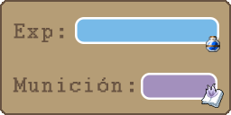
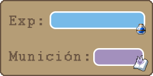
Sprites utilizados para representar las notificaciones.
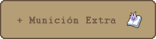 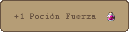
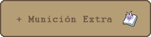 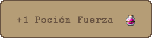
Únicamente queremos añadir que el sistema de notificaciones es un sistema LIFO. El tiempo de la notificación está parametrizado en el constructor de la clase Notificaciones por lo que lo hemos podido reutilizar sin ningún tipo de problema. La gestión de los tiempos lo hemos hecho gracias al parámetro delta, que nos indica el tiempo que ha transcurrido desde la ultima vez que el nivel llamó a update.
Más información sobre el sistema de notificaciones
Estructura del juego
El juego parte de un menú de inicio que tendrá una serie de botones que nos permitirán jugar una nueva partida, cargar una partida existente (Solo se guarda partida tras superar un nivel, se hace automáticamente) y un botón de opciones que nos mostrará el estado de controles, rankings y créditos.
La linea lógica del juego se compone de tres niveles, en cada niveles hay una serie de escenas(Mapas), donde el jugador tendrá que ir superándolos para ganar la partida. El sistema de experiencia está pensado para incitar al jugador a re-jugar al juego una vez pasado para mejorar su marca. Esto sumado al factor RNG anteriormente descrito hace que cada partida sea un cúmulo distinto de sensaciones.
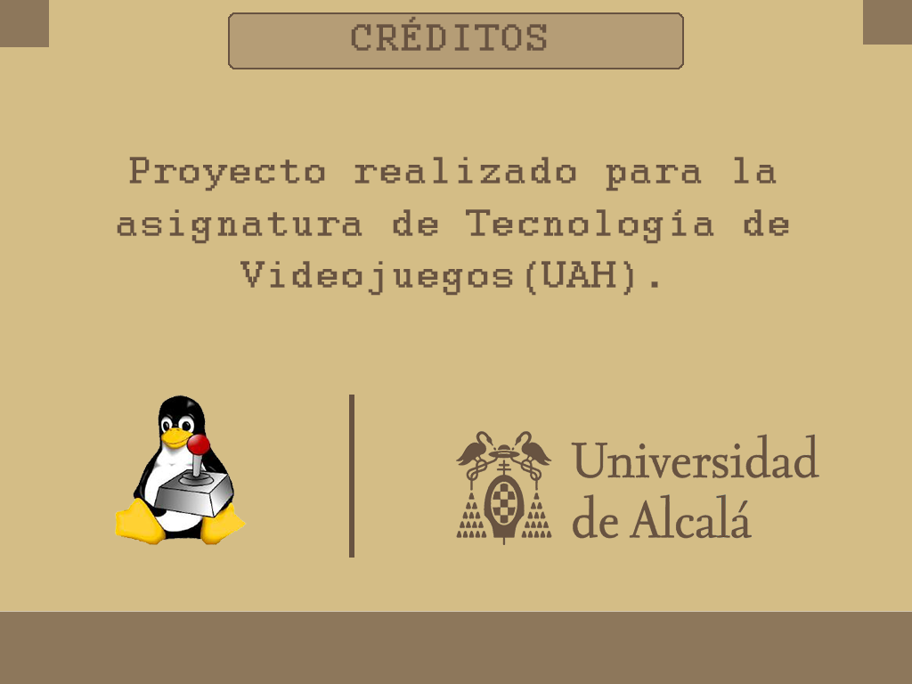
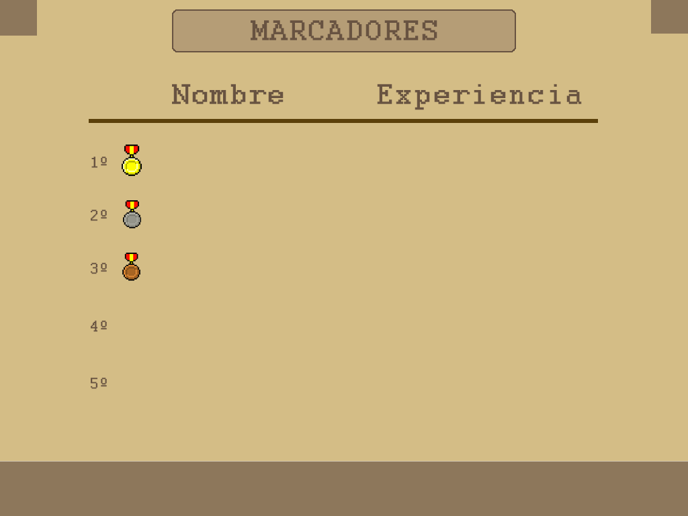
Música y gráficos
Nuestro grupo de trabajo es de carácter no mixto, por lo que todos somos estudiantes de ingeniería. Solo dos de nosotros estamos dotados de cualidades de diseño gráfico básico.
Debido a esto, los recursos gráficos se tomarán de páginas de arte libre. Se intentará crear los sprites básicos como el inventario, HUD y los botones. Sin embargo, los SpritesSheets de los mapas se tomarán de Internet referenciando en todos los casos la procedencia de dicho material, para así reconocer el mérito de los creadores de estos recursos. Este procedimiento se realizará de forma completamente análoga con respecto al audio.
Las herramientas utilizadas para el montaje y edición de los fondos y sprites han sido Photoshop, Gimp y Tiledmap. Photoshop y Gimp se han utilizado para la edición de los fondos, y Tiledmap se ha empleado para la creación de los mapas. Por otra parte, el programa WavePad ha servido para recortar algunos sonidos.
El código está comentado con JavaDocs y organizado por paquetes, esperamos que esté lo suficientemente limpio y claro para cualquiera que quiera hacer uso de él o colaborar en el proyecto.